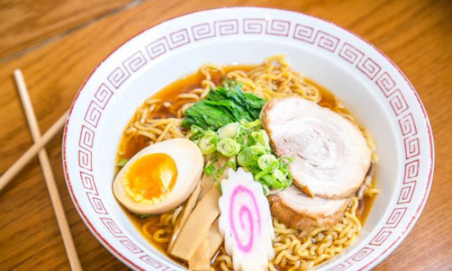

Ramen

Descripción
El naruto o narutomaki, es un rollo hecho principalmente de surimi de pescados blancos prensados, con un característico remolino en el centro de color rosa, proveniente de la coloración del pescado con colorantes alimentarios.
El narutomaki tiene una larga historia adornando las sopas de fideos tradicionales, como el ramen y el soba. Generalmente se suele comprar ya preparado en cualquier supermercado asiático, pero en esta receta hemos querido hacerlo desde cero, como toda la receta.
También te sonará el nombre de Naruto por el manga y la serie llamado así, que cuenta las aventuras de un ninja al que le encanta el ramen, justamente elaborado así, con narutomaki.
Ingredientes
Para el narutomaki:
- 300 gr de filetes de merluza u otro pescado blanco, sin piel ni espinas
- 2 cucharadas de harina
- 1 cucharadita de sal
- 2 cucharadas de agua
- Tres gotas de colorante rosa
Para el ramen:
- 500 gr de solomillo de cerdo
- 3 cm de jengibre, pelado
- 2 dientes de ajo, pelados
- 1 cebolleta, la parte blanca y la verde, por separado
- 1 zanahoria, pelada y cortada en bastones
- 2 litros de caldo de carne
- 40 ml de salsa de soja
- 2 paquetes individuales de fideos ramen
Para la decoración:
- 4 algas nori secas
- 2 huevos
Elaboración de la receta
- Empezamos haciendo el narutomaki. Picamos los filetes de merluza en trozos pequeños, y lo ponemos en remojo con agua. Enseguida veremos que el agua empieza a enturbiarse, y entonces tendremos que cambiar el agua, de 2 a 3 veces, hasta que el agua se mantenga clara.
- Una vez ocurra esto, escurrimos bien el pescado, y lo secamos con papel de cocina. De este pescado, pesamos 230 gramos, aproximadamente y lo ponemos en una picadora para triturarlo por completo, hasta que quede completamente molido.
- De esta guisa, le añadimos la harina, la sal y el agua; y volvemos a triturarlo de nuevo hasta formar una pasta manejable, pero un poco pegajosa.
- Preparamos una esterilla de bambú, cubierta con film transparente; y extendemos la masa de pescado con los dedos, formando un rectángulo bien plano en el centro.
- Por otra parte, trituramos la cantidad restante de merluza, y le añadimos unas gotas de colorante rosa, mezclándolo bien hasta que toda la pasta tenga un color rosa intenso. Cuanto más rosa esté, más se verá.
- Esta pasta la extendemos sobre el rectángulo anterior, dejando unos centímetros de margen por los bordes. Es el momento de enrollar la pasta, que es igual que enrollar el sushi. Nos ayudamos de la esterilla, y vamos enrollando la pasta en un cilindro.
- Una vez enrollado sobre el film, hacemos que ruede con las manos para que termine de definir la forma, y lo envolvemos por los lados para que no se salga.
- Cocinamos el rollo al vapor durante media hora, añadiendo más agua si vemos que es necesario. Para ello podemos utilizar una vaporera de bambú o una normal, lo que tengamos a mano.
- Dejamos que enfríe a temperatura ambiente durante por lo menos dos horas.
- Mientras tanto, podemos ir haciendo el caldo del ramen. Para ello calentamos los dos litros de caldo hasta que hierva, añadimos el ajo, la zanahoria cortada, la parte blanca de la cebolleta, el jengibre, un chorrito de salsa de soja y sal.
- Cortamos la grasa del solomillo y lo añadimos entero también a la olla con los ingredientes. Dejamos que se cocine durante 40-45 minutos a fuego medio-alto.
- Cocemos los fideos en agua según las instrucciones del paquete, y los dividimos a partes iguales en dos platos hondos.
- Cocemos también los dos huevos durante 7 minutos. Los escurrimos, enfriamos y pelamos. Después los partimos por la mitad.
- Sacamos el cerdo y lo cortamos en lonchas finas. Colamos el caldo y vertemos la mitad en un plato y la otra mitad en el otro, cubriendo los fideos.
- Colocamos las lonchas de cerdo en un lado, las algas nori justo detrás del solomillo, encima de los fideos ponemos la parte verde de la cebolleta picada, los bastones de zanahoria del caldo y el huevo por la mitad.
- Por último, cortamos el narutomaki en rodajas lo más finas posible, y lo ponemos encima de los fideos, al lado del resto de ingredientes.
¡Delicioso!